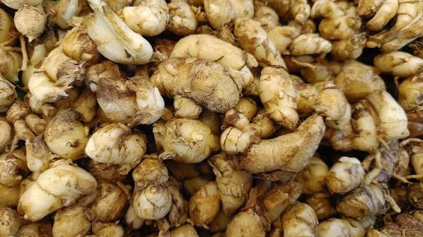

Kandungan Utama
- Minyak atsiri
- Sineol
- Etil p-metoksisinamat
- Flavonoid
- Alkaloid
- Saponin
- Pati
- Mineral alami


Nama Ilmiah : Kaempferia galanga L.
Kencur merupakan salah satu tanaman obat keluarga (TOGA) yang telah lama dimanfaatkan dalam pengobatan tradisional Indonesia. Tanaman rimpang ini memiliki aroma khas dan sering digunakan sebagai bumbu masakan maupun bahan utama jamu. Kandungan minyak atsiri, flavonoid, alkaloid, dan berbagai senyawa aktif lainnya menjadikan kencur memiliki banyak manfaat untuk membantu menjaga kesehatan tubuh secara alami.
Kencur memiliki berbagai manfaat bagi kesehatan berkat kandungan minyak atsiri dan senyawa aktif lainnya. Secara tradisional, kencur dipercaya membantu melegakan tenggorokan, meredakan batuk ringan, mengatasi masuk angin, mengurangi rasa mual, meningkatkan nafsu makan, melancarkan sistem pencernaan, mengurangi perut kembung, serta membantu meredakan pegal dan nyeri otot. Selain itu, kandungan antioksidan dalam kencur juga berperan membantu melindungi tubuh dari radikal bebas serta menjaga daya tahan tubuh agar tetap optimal.
Konsumsi kencur sebaiknya dalam jumlah yang wajar. Penggunaan berlebihan dapat menyebabkan gangguan lambung pada sebagian orang. Bagi ibu hamil, ibu menyusui, atau seseorang yang memiliki kondisi kesehatan tertentu, disarankan berkonsultasi dengan tenaga kesehatan sebelum mengonsumsi kencur secara rutin sebagai obat herbal.
Scan QR Code berikut untuk membuka halaman informasi tanaman Kencur.